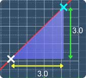

Graphs: Slope of a Line
Lesson Objective
Learn how to calculate the slope of a line.
About This Lesson
A straight line has several properties that you
can measure or calculate. One of the property is
the slope.
In this lesson, you'll get to know how to formulate and calculate the slope of a line.
Also, note that the slope is also known as the gradient.
In this lesson, you'll get to know how to formulate and calculate the slope of a line.
Also, note that the slope is also known as the gradient.

This lesson is divided into 2 parts. The first part is
to help you
familiarize with the terms 'change in x' and
change in y'.
The second part is the actual lesson on the slope of a line.
 Now, watch the following math videos to know more.
Now, watch the following math videos to know more.
The second part is the actual lesson on the slope of a line.
Tip #1
When calculating the change, always 'run' first and then 'climb' up. The math video will illustrate more.
Tip #2
Know how to calculate the 'change in x' and
'change in y' first before attempting
to calculate the slope. This minimizes
mistake.
Tip #3
Now, what is the definition for the slope of a
line? It is defined as the ratio of the 'change in y' to the 'change in x'. This simply means that you just divide 'change in y' with 'change in x' to find the slope.
Transcript for the 'change in x' and 'change in y' lesson
Transcript for the slope of a line lesson
Multiple Choice Questions (MCQ)
Now, let's try some MCQ questions to understand
this lesson better.
You can start by going through the series of questions on slope of a line or pick your choice of question below.
You can start by going through the series of questions on slope of a line or pick your choice of question below.
- Question 1 on 'change in x' and 'change in y'
- Question 2 on calculating the slope of a line